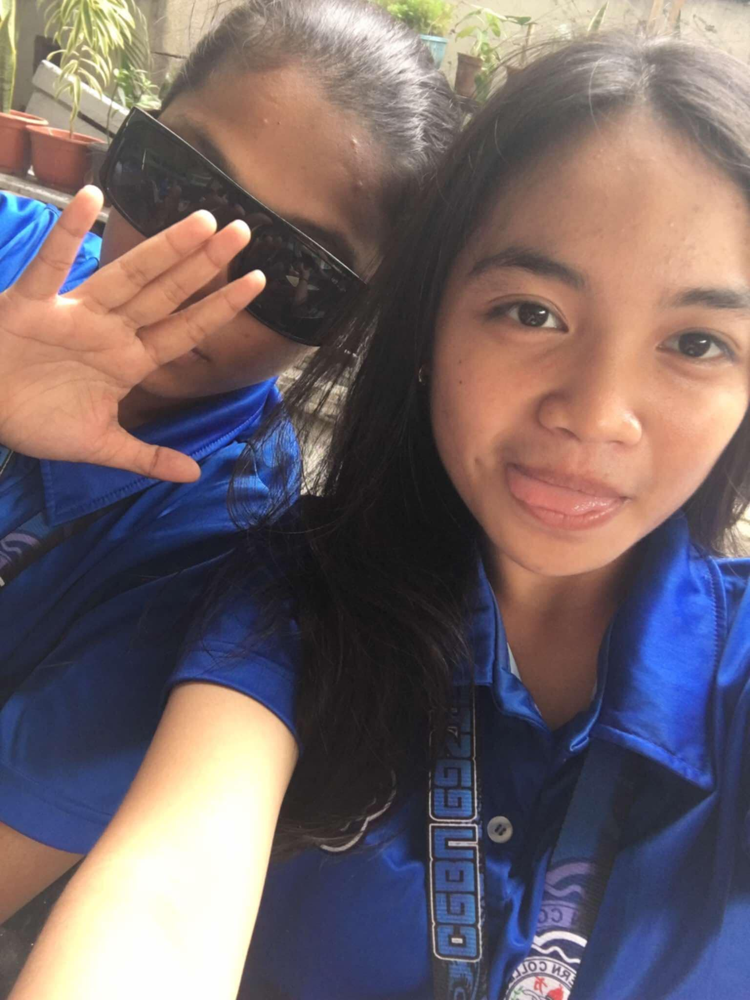
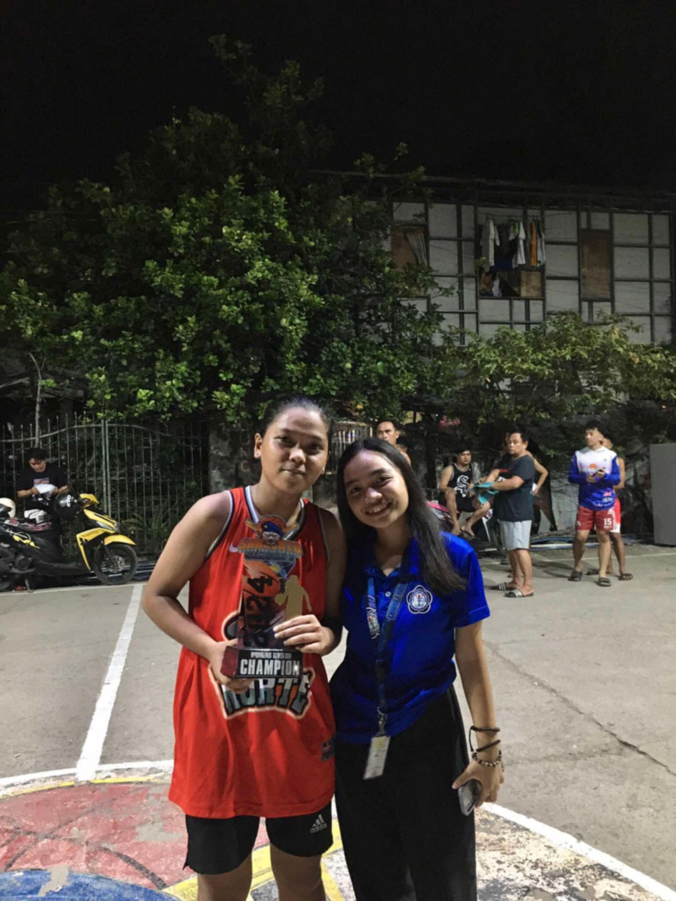
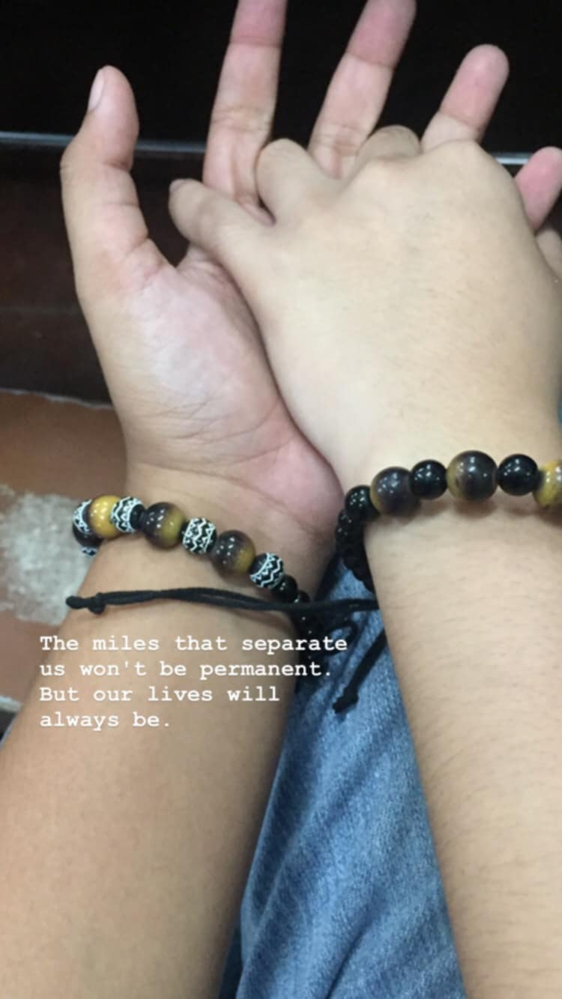
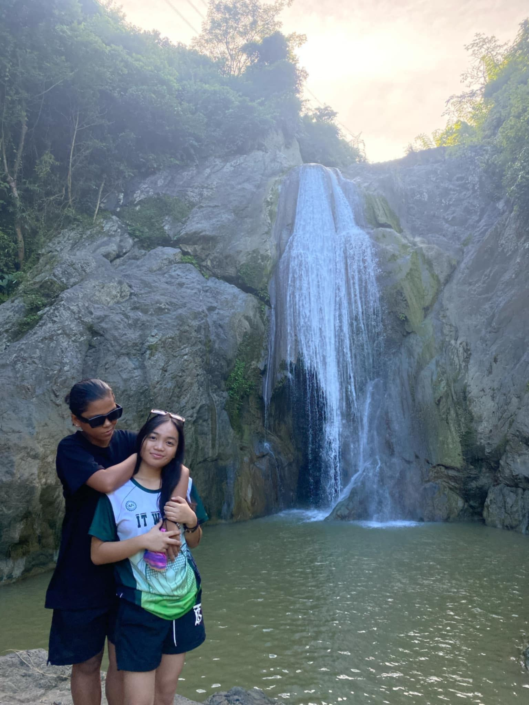
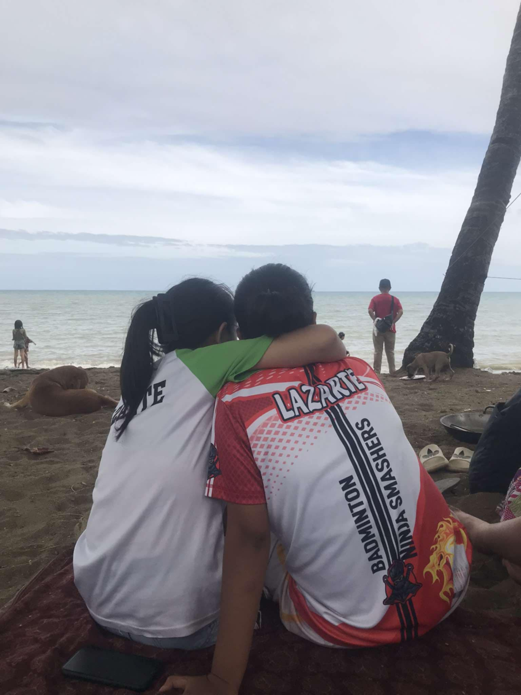

"The picture that you can see is the time when our Insructor his favorite song entitled "YOUR SONG". Little did Alliah know that this day was one of my happiest days because we sang together, in front of our classmates and our Instructor."-Shien
In the present, we have a natural, unconscious rhythm. Focused and in a period of time we connect with each chord and phrase as we lean into the music. Our body language communicates ease, comprehension, and something more profound—it's a shared emotion rather than merely an act.
"Love is too beautiful to be hidden in a closet." – Unknown 🌈💖
This was the first selfie that we ever had. We were very shy with each other back then.PS. we were not yet in a relationship at this time.

Our first photo together is a straightforward but significant selfie—a moment that signifies the start of something unique—with no elaborate poses, just the two of us being naturally together and documenting the beginning of our adventure in a single image.
More than just a video, our first TikTok together was a time of unadulterated joy and comfort and an indication of our developing relationship. Not overanalyzing, just us being ourselves, having fun, feeling good, and relishing the beginning of something unique.
"Love is love. Full stop."It's not about fitting into boxes or labels, but about the genuine connection and affection between two people.
"This is my first time Watching her playing basketball felt like finding a new favorite team—unexpected, exciting, and instantly unforgettable."

"Win or lose, she's my MVP every time."
Our first date at the beach was simple but perfect—barefoot walks on the sand, laughter in the breeze, and a sunset that felt like it was just for us.
"Everything about that day felt easy, natural, and warm—just like being with her."
The first time our hands touched, it felt like my whole world shifted—soft, simple, but full of meaning."

The miles that separates won't be permanentt.But our lives will always be.
"Our date at the falls was peaceful and unforgettable—the sound of rushing water, the cool mist in the air, and quiet moments shared between smiles and stolen glances. Nature surrounded us, but all I could focus on was her."

"The waterfall was breathtaking, but nothing compared to the way she looked at me."
"Our second beach date felt even more special—familiar, yet full of new little moments. We laughed more, held hands longer, and watched the waves like they were dancing just for us. The ocean stayed the same, but we felt closer than ever."

"Our love is a story written with courage, and every chapter feels more beautiful than the last."
"The video captures the carefree moments of us on the beach—laughter echoing in the wind, the sun casting its golden glow on us, and our feet sinking into the sand. Every frame is filled with joy, love, and the pure magic of being together by the ocean."
"Our beach video is a collection of unforgettable moments—waves crashing, the sun setting, and us simply being present in each other’s company. Every second reminds me how beautiful it is to share simple, happy moments with the one I love."